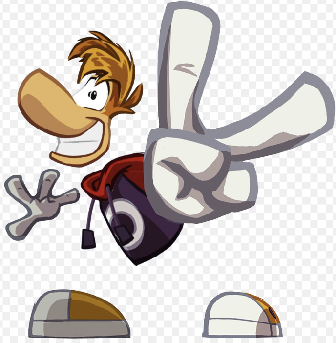

So I knew I wanted to make something simple for the game so that the model wouldn't have to many peices and it would be simple to pose. Rayman came to mind because he was both simple and extremely expressive. He had all of the limbs you would want on a character (hands, feet, torso and head) meaning he could feasibly be put into any pose while still coming across as readable to the audience. Thus that is something I implemented into my character, simple feet, bean torso, but a very expressive face that I could mold into pretty much anything it needed to be.
When I made the character I was also told that they needed to made with a kid audience in mind. So I gave them plently of soft rounded features to make them more approachable. I also wanted to try to keep the character androgynous looking, so that the kid could veiw themselves as the character easier, regardless of who they were. Thus I gave the protagonist items like the sports cap or the lady bug vest to try to fit them into both camps.